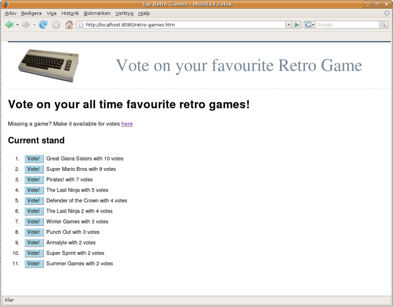
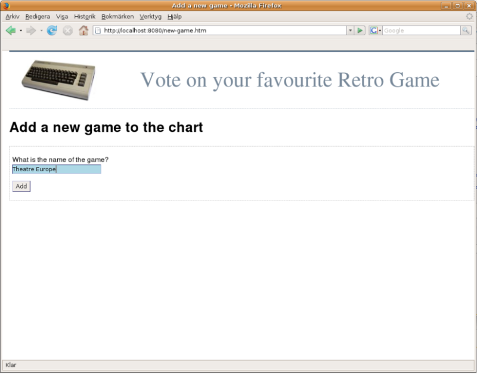

Следующая статья и код были обновлены как книга Lisp для Web. Вы можете получить его по любой цене на Leanpub.
С нуля разработаем трехуровневое веб-приложение. Я покажу, как:
использовать мощные библиотеки с открытым исходным кодом для выражения динамического HTML и JavaScript в Lisp,
разработать небольшой встроенный предметно-ориентированный язык(domain specific language - DSL), адаптированный для моего приложения,
расширить типичный цикл разработки, изменяя код в работающей системе и выполняя код во время компиляции,
и, наконец, перейти от структур данных в памяти к постоянным объектам с помощью сторонней базы данных.
Я сделаю это в живой системе, прозрачной для пользователей приложения. Поскольку Lisp очень высокоуровневый, я смогу достичь всего примерно за 70 строк кода.
Эта статья не научит вас Common Lisp (для этой цели я рекомендую Практический Common Lisp ). Вместо этого я дам краткий обзор языка и попытаюсь объяснить концепции по мере их введения, достаточно, чтобы следовать коду. Идея состоит в том, чтобы передать ощущение того, как нужно развиваться в Lisp, а не сосредотачиваться на деталях.
Лисп - это фактически семейство языков, открытых Джоном Маккарти 50 лет назад. Характерной чертой Лиспа является то, что код Лиспа состоит из структур данных Лиспа с практическим подтекстом, о том что не только естественно, но и очень эффективно писать программы, которые пишут программы. Эта функция позволила Lisp адаптироваться на протяжении многих лет. Например, когда стало популярным объектно-ориентированное программирование, на Лиспе можно было реализовать мощные объектные системы в виде библиотек без каких-либо изменений в базовом языке. Позже то же самое подтвердилось и для аспектно-ориентированного программирования.
Эта идея применима не только ко всем парадигмам программирования. Его истинная сила - в решении повседневных проблем. С Lisp легко создать предметно-ориентированный язык(DSL), позволяющий нам программировать настолько близко к предметной области, насколько позволяет наше воображение. Я скоро проиллюстрирую эту концепцию, но прежде чем мы начнем, давайте подробнее рассмотрим синтаксис Lisp.
То, что Грэм использовал для Viaweb, был Common Lisp, стандартизированным языком ANSI, который мы будем использовать и в этой статье (другой главный претендент - Scheme, который считается более чистым и элегантным, но с гораздо меньшей библиотекой).
Common Lisp - это интерактивный язык высокого уровня, который можно интерпретировать или компилировать. Вы взаимодействуете с Лиспом через его верхний уровень. Верхний уровень - это, по сути, подсказка. В моей системе это выглядит так:
CL-USER>
Через верхний уровень мы можем вводить выражения и видеть результаты (значения, возвращаемые верхним уровнем, выделяются):
CL-USER>(+ 1 2 3)
6
Как мы видим в примере, Lisp использует префиксную нотацию. Выражение в скобках называется формой. При загрузке такой формы, как (+ 1 2 3), Lisp обычно обрабатывает первый элемент (+) как функцию, а остальные как аргументы. Аргументы вычисляются слева направо и сами могут быть вызовами функций:
CL-USER>(+ 1 2 (/ 6 2))
6
Мы можем определить наши собственные функции с помощью defun:
CL-USER>(defun say-hello (to)
(format t "Hello, ~a" to))
Здесь мы определяем функцию say-hello, принимая один аргумент: to. Функция format используется для печати приветствия и напоминает printf на стероидах. Её первый аргумент - это выходной поток, и здесь мы используем t как сокращение для стандартного вывода. Второй аргумент - это строка, которая в нашем случае содержит встроенную директиву ~ формат инструкции для использования одного аргумента и вывода его в удобочитаемой форме. Мы можем вызвать нашу функцию так:
CL-USER>(say-hello "ACCU")
Hello, ACCU
NIL
Первая строка - это побочный эффект, печати "Hello, ACCU", а NIL - это возвращаемое значение из нашей функции. По умолчанию Common Lisp возвращает значение последнего выражения. Отсюда мы можем переопределить say-hello, чтобы вместо этого возвращалось его приветствие:
CL-USER>(defun say-hello (to)
(format nil "Hello, ~a" to))
Если в качестве места назначения используется nil, format просто возвращает результирующую строку:
CL-USER>(say-hello "ACCU")
"Hello, ACCU"
Теперь мы избавились от побочного эффекта. Программирование без побочных эффектов находится в русле функционального программирования, одной из парадигм, поддерживаемых Lisp. Lisp также имеет динамическую типизацию. Таким образом, мы можем вместо этого скормить нашей функции число:
CL-USER>(say-hello 42)
"Hello, 42"
В Лиспе функции - это граждане первого класса. Это означает, что мы можем создавать их, как любой другой объект, и передавать их в качестве аргументов другим функциям. Такие функции, принимающие функции в качестве аргументов, называются функциями высшего порядка. Один из примеров - mapcar. mapcar принимает функцию в качестве первого аргумента и впоследствии применяет ее к элементам одного или нескольких заданных списков:
CL-USER>(mapcar #'say-hello (list "ACCU" 42 "Adam"))
("Hello, ACCU" "Hello, 42" "Hello, Adam")
Забавный #'- это просто ярлык для доступа к объекту функции. Как вы видите выше, mapcar собирает результат каждого вызова функции в список, который является ее возвращаемым значением. Это возвращаемое значение, конечно, может служить аргументом еще одной функции:
CL-USER>(sort (mapcar #'say-hello (list "ACCU" 42 "Adam")) #'string-lessp)
("Hello, 42" "Hello, ACCU" "Hello, Adam")
Сам по себе Lisp несложен, хотя может потребоваться некоторое время, чтобы понять функциональный стиль программирования. Как видите, выражения Lisp лучше всего читать изнутри-наружу. Но настоящий секрет понимания синтаксиса Лиспа состоит в том, чтобы понять, что его нет в языке; то, что мы ввели выше, - это в основном деревья синтаксического анализа, генерируемые компиляторами на других языках. И, как мы скоро увидим, именно эта функция делает его пригодным для метапрограммирования.
Помните горячие игровые дискуссии 20 лет назад? "Giana Sisters"(Сестры Джиана) действительно были намного лучше, чем "Super Mario Bros", не так ли? Мы передадим вопрос мудрым людям, разработав веб-приложение. Наше веб-приложение позволит пользователям добавлять и голосовать за свои любимые ретро-игры. Снимок экрана с конечным результатом представлен на рисунке 1 ниже.

С этого момента я начинаю сохранять свой код на Лиспе в текстовых файлах вместо того, чтобы просто вводить выражения на верхнем уровне. Далее я определяю пакет для своего кода. Пакеты похожи на пространства имен в пакетах C ++ или Java и помогают предотвратить конфликты имен (главное отличие состоит в том, что пакеты в Common Lisp являются объектами первого класса).
(defpackage :retro-games
(:use :cl :cl-who :hunchentoot :parenscript))
Новый пакет называется :retro-games, и я также указываю другие пакеты, которые мы будем использовать изначально:
CL - стандартный пакет Common Lisp, содержащий весь язык.
CL-WHO это библиотека для преобразования выражений Lisp в XHTML.
Hunchentoot это веб-сервер, написанный на самом Common Lisp и предоставляющий инструментарий для создания динамических веб-сайтов.
ParenScript позволяет нам компилировать выражения Lisp в JavaScript. Мы будем использовать его для проверки на стороне клиента.
Имея определение моего пакета, я помещу в него остальной код, переключившись на пакет :retro-games :
(in-package :retro-games)
Большинство верхних уровней указывают текущий пакет в своем приглашении. В моей системе приглашение теперь выглядит так:
RETRO-GAMES>
Когда пакет на месте, мы можем вернуться к проблеме. Кажется, она требует некоторого представления игры, и я предпочитаю абстрагировать её как класс:
(defclass game ()
((name :initarg :name)
(votes :initform 0)))
Выражение выше определяет класс game без каких-либо определяемых пользователем суперклассов, поэтому пустой список () является вторым аргументом. В игре есть два slots(слота) (слоты аналогичны атрибутам или членам на других языках): name(имя) и количество набранных голосов. Чтобы создать игровой объект, я вызываю make-instance и передаю ему имя класса для создания экземпляра:
RETRO-GAMES>(setf many-lost-hours (make-instance 'game :name "Tetris"))
#<GAME @ #x7213da32>
Поскольку я указал начальный аргумент в моем определении слота name(имени), я могу передать этот аргумент напрямую и инициализировать этот слот как "Tetris". Слот votes(голоса) не имеет начального аргумента. Вместо этого я указываю код, который хочу запустить во время создания экземпляра, чтобы вычислить его начальное значение с помощью :initform. В этом случае код тривиален, так как я хочу только инициализировать количество голосов нулем. Кроме того, я использую setf для присвоения объекта, созданного make-instance, переменной many-lost-hours.
Теперь, когда у нас есть экземпляр игры, мы хотели бы что-то с ним сделать. Конечно, мы могли бы сами написать код для доступа к слотам. Однако есть более лисповый способ; defclass предоставляет возможность автоматически генерировать функции доступа для наших слотов(accessor):
(defclass game ()
((name :reader name
:initarg :name)
(votes :accessor votes
:initform 0)))
Опция :reader в слоте имени автоматически создаст функцию чтения, а опция :accessor, используемая для слота votes(голосов), создаст функции как чтения, так и записи. Lisp приятно единообразен по синтаксису, и эти сгенерированные функции вызываются так же, как и любые другие функции:
RETRO-GAMES>(name many-lost-hours)
"Tetris"
RETRO-GAMES>(votes many-lost-hours)
0
RETRO-GAMES>(incf (votes many-lost-hours))
1
RETRO-GAMES>(votes many-lost-hours)
1
Единственная новая функция здесь - incf, которая при задании одного аргумента увеличивает свое значение на единицу. Мы можем инкапсулировать этот механизм в метод, используемый для голосования за данную игру:
(defmethod vote-for (user-selected-game)
(incf (votes user-selected-game)))
Верхний уровень позволяет сразу опробовать и проголосовать за Tetris:
RETRO-GAMES>(votes many-lost-hours)
1
RETRO-GAMES>(vote-for many-lost-hours)
2
RETRO-GAMES>(votes many-lost-hours)
2
Прежде чем мы сможем окунуться в радость создания веб-страниц, нам понадобится серверная часть для нашего приложения. Поскольку Lisp позволяет легко изменять существующие приложения, обычно начинают очень просто и позволяют развивать разработку по мере того, как мы узнаем больше о проблеме, которую пытаемся решить. Таким образом, я начну с использования списка в памяти как простого непостоянного(non-persistent) хранилища.
(defvar *games* '())
Выражение выше определяет и инициализирует глобальную переменную (фактически термин Lisp - это специальная переменная) *games* пустым списком. Звездочки не являются частью синтаксиса; это просто соглашение об именах для глобальных объектов. Списки могут быть не самой эффективной структурой данных для всех проблем, но Common Lisp отлично поддерживает списки, и с ними легко работать. Позже мы перейдем к настоящей базе данных, и, имея это в виду, я инкапсулирую доступ к *games* в несколько небольших функций:
(defun game-from-name (name)
(find name *games* :test #'string-equal
:key #'name))
Наша первая функция game-from-name реализована в терминах find. find принимает элемент и последовательность. Поскольку мы сравниваем строки, я говорю find использовать для сравнения функцию string-equal (помните, #'- это сокращение для ссылки на функцию). Также указываю ключ для сравнения. В данном случае нас интересует сравнение значения, возвращаемого функцией name для каждого объекта game.
Если совпадений нет, find возвращает NIL, что в логическом контексте принимает значение false. Это означает, что мы можем повторно использовать game-from-name, когда хотим знать, хранится ли игра в списке *games*. Однако мы хотим прояснить наши намерения:
(defun game-stored? (game-name)
(game-from-name game-name))
Как показано на рисунке 1, мы хотим представить игры, отсортированные по популярности. Это довольно просто сделать с помощью функции сортировки Common Lisp; нам нужно только позаботиться, потому что по соображениям эффективности сортировка деструктивна. То есть sort может изменять свой аргумент. Мы можем сохранить наш список *games*, передав копию для сортировки. Я говорю sort возвращать список, отсортированный в порядке убывания на основе значения, возвращаемого функцией votes, вызываемой для каждой game(игры):
(defun games ()
(sort (copy-list *games*) #'> :key #'votes))
Пока что запросы. Определим еще одну утилиту для фактического добавления игр в наше хранилище:
(defun add-game (name)
(unless (game-stored? name)
(push (make-instance 'game :name name) *games*)))
push - это модифицирующая операция, которая добавляет game(игру), созданную make-instance, в список *games*. Давайте попробуем все это на высшем уровне.
RETRO-GAMES>(games)
NIL
RETRO-GAMES>(add-game "Tetris")
(#<GAME @ #x71b943c2>)
RETRO-GAMES>(game-from-name "Tetris")
#<GAME @ #x71b943c2>
RETRO-GAMES>(add-game "Tetris")
NIL
RETRO-GAMES>(games)
(#<GAME @ #x71b943c2>)
RETRO-GAMES>(mapcar #'name (games))
("Tetris")
Значения, возвращаемые на верхний уровень, могут выглядеть не слишком информативными. По сути, это печатное представление объекта game. Common Lisp позволяет нам настраивать способ печати объекта, но мы не будем вдаваться в подробности. Вместо этого, с этим прототипом серверной части, мы готовы войти в Интернет.
Первым шагом в разработке встроенного предметно-ориентированного языка является поиск лисп-представления целевого языка. Для HTML это действительно просто, поскольку и HTML, и Lisp представлены в виде древовидной структуры, хотя Lisp менее подробен. Вот пример использования библиотеки CL-WHO:
(with-html-output (*standard-output* nil :indent t)
(:html
(:head
(:title "Test page"))
(:body
(:p "CL-WHO is really easy to use"))))
Этот код будет расширен до следующего HTML, который выводится в *standard-output* :
<html>
<head>
<title>Test page </title>
</head>
<body>
<p> CL-WHO is really easy to use </p>
</body>
</html>
CL-WHO aтакже позволяет нам встраивать выражения Лиспа, настраивая сцену для динамических веб-страниц.
Хотя CL-WHO обеспечивает более точное представление, чем сырой HTML, мы все еще сталкиваемся с потенциальным риском дублирования кода; теги html, head и body образуют шаблон, который будет повторяться на всех страницах. И станет только хуже, когда мы начнем писать строгий и проверяющий XHTML 1.0, где нам придется включать больше тегов и атрибутов и, конечно же, начинать каждую страницу с этой забавной строки DOCTYPE.
Кроме того, если вы посмотрите на рисунок 1, вы заметите, что на странице ретро-игр есть заголовок с изображением этого прекрасного Commodore (фото Билла Бертрама - спасибо!) И ремешок. Я хочу иметь возможность определить этот заголовок один раз, и все мои страницы будут использовать его автоматически. Проблема требует подходящей абстракции, и в этом Лисп отличается от других языков. В Лиспе мы фактически можем взять на себя роль разработчика языка и расширить язык нашим собственным синтаксисом. Функциональность которая позволяет это сделать, - это макросы. Синтаксически макросы выглядят как функции, но представляют собой совершенно разные зверюги. Конечно, точно так же, как макросы функций принимают аргументы. Разница в том, что аргументы макросов - это исходный код, потому что макросы используются компилятором для генерации кода.
Макросы могут быть концептуальной проблемой, поскольку они стирают грань между временем компиляции и временем выполнения. Макросы расширяются в код, который фактически компилируется. При своем расширении макросы имеют доступ ко всему языку, включая другие макросы, и могут вызывать функции, создавать объекты и т. Д.
Итак, давайте задействуем этот удивительный механизм макросов, определив новую синтаксическую конструкцию, standard-page(стандартную страницу). standard-page абстрагирует весь шаблонный код XHTML и автоматически генерирует заголовок на каждой странице. Макрос примет два аргумента. Первый - это заголовок страницы, а второй - код, определяющий тело фактической веб-страницы. Вот простой пример использования:
(standard-page (:title "Retro Games")
(:h1 "Top Retro Games")
(:p "We'll write the code later..."))
Большая часть макроса будет простыми конструкциями CL-WHO. Используя синтаксис обратной кавычки (символьный знак `), мы можем указать шаблон для кода, который мы хотим сгенерировать:
(defmacro standard-page ((&key title) &body body)
`(with-html-output-to-string (*standard-output* nil :prologue t :indent t)
(:html :xmlns "http://www.w3.org/1999/xhtml"
:xml\:lang "en"
:lang "en"
(:head
(:meta :http-equiv "Content-Type"
:content "text/html;charset=utf-8")
(:title ,title)
(:link :type "text/css"
:rel "stylesheet"
:href "/retro.css"))
(:body
(:div :id "header" ; Retro games header
(:img :src "/logo.jpg"
:alt "Commodore 64"
:class "logo")
(:span :class "strapline"
"Vote on your favourite Retro Game"))
,@body))))
Внутри выражения, заключенного в обратные кавычки, мы можем использовать , (запятую) для вычисления аргумента и ,@ (запятая-at), чтобы вычислить и объединить аргумент список. Помните, что аргументы макроса - это код. В этом примере первый аргумент title привязан к "Retro Games", а второй аргумент body содержит выражения :h1 и :p, заключенные в списке. В определении макроса код, связанный с этими аргументами, просто вставляется в нужные места в нашем коде шаблона, заключенном в обратные кавычки.
Мощь, которую мы получаем от макросов, становится очевидной, когда мы смотрим на сгенерированный код. Три строки в приведенном выше примере использования расширяются в это (обратите внимание, что символы Lisp нечувствительны к регистру и поэтому обычно представлены в верхнем регистре):
(WITH-HTML-OUTPUT-TO-STRING (*STANDARD-OUTPUT* NIL :PROLOGUE T :INDENT T)
(:HTML :XMLNS "http://www.w3.org/1999/xhtml"
:|XML:LANG| "en"
:LANG "en"
(:HEAD
(:META :HTTP-EQUIV "Content-Type"
:CONTENT "text/html;charset=utf-8")
(:TITLE "Retro Games")
(:LINK :TYPE "text/css"
:REL "stylesheet"
:HREF "/retro.css"))
(:BODY
(:DIV :ID "header"
(:IMG :SRC "/logo.jpg"
:ALT "Commodore 64"
:CLASS "logo")
(:SPAN :CLASS "strapline"
"Vote on your favourite Retro Game"))
(:H1 "Top Retro Games")
(:P "We'll write the code later..."))))
Это большая победа; все это код, который нам не нужно писать. Теперь, когда у нас есть краткий способ выразить веб-страницы с помощью единообразного вида, пришло время представить Hunchentoot.
Hunchentoot Эди Вейца, названный в честь научно-фантастической оперы Заппы, представляет собой полнофункциональный веб-сервер, написанный на Common Lisp. Чтобы запустить Hunchentoot, мы просто вызываем его функцию start-server:
RETRO-GAMES>(start-server :port 8080)
start-server поддерживает несколько аргументов, но нас интересует только указать порт, отличный от порта по умолчанию 80. И все - сервер запущен и работает. Мы можем проверить это, указав в веб-браузере адрес http://localhost:8080/, который должен отображать страницу Hunchentoot по умолчанию. Чтобы что-то опубликовать, мы должны предоставить Hunchentoot handler(обработчик). В Hunchentoot все запросы динамически отправляются соответствующему обработчику, а фреймворк содержит несколько функций для определения диспетчеров(распределителей сообщений). Приведенный ниже код создает диспетчер и добавляет его в таблицу диспетчеризации Hunchentoot:
(push (create-prefix-dispatcher "/retro-games.htm" 'retro-games) *dispatch-table*)
Диспетчер будет вызывать функцию retro-games всякий раз, когда запрос URI начинается с /retro-games.htm. Теперь нам просто нужно определить функцию retro-games, которая генерирует HTML:
(defun retro-games ()
(standard-page (:title "Retro Games")
(:h1 "Top Retro Games")
(:p "We'll write the code later...")))
Вот и вся - онлайн-страница ретро-игр. Но я бы не спешил праздновать; Хотя мы постарались абстрагироваться от повторяющихся шаблонов на стандартной странице, мы только что столкнулись с другой, более тонкой формой дублирования. Проблема в том, что каждый раз, когда мы хотим создать новую страницу, мы должны явно создавать диспетчер для нашего обработчика. Было бы неплохо, если бы Lisp мог делать это за нас автоматически? В основном я хочу определить такую функцию:
(define-url-fn (retro-games)
(standard-page (:title "Retro Games")
(:h1 "Top Retro Games")
(:p "We'll write the code later...")))
и попросил Lisp создать обработчик, связать его с диспетчером и поместить в таблицу диспетчеризации по мере компиляции кода. Угадайте, какой синтаксис использует наш макрос. Все, что нам нужно сделать, это переформулировать наши пожелания в defmacro:
(defmacro define-url-fn ((name) &body body)
`(progn
(defun ,name ()
,@body)
(push (create-prefix-dispatcher ,(format nil "/~(~a~).htm" name) ',name) *dispatch-table*)))
Теперь наш "wish code"(код пожелания) указанного выше фактически компилируется и генерирует следующий код Лиспа (аргументы макроса выделены):
(PROGN
(DEFUN RETRO-GAMES ()
(STANDARD-PAGE (:TITLE "Retro Games")
(:H1 "Top Retro Games")
(:P "We'll write the code later...")))
(PUSH (CREATE-PREFIX-DISPATCHER "/retro-games.htm" 'RETRO-GAMES) *DISPATCH-TABLE*))
В этом макросе есть несколько интересных моментов:
Он показывает, что макросы могут принимать другие макросы в качестве аргументов. Компилятор Lisp продолжит расширять макросы, и standard-page тоже будет расширена, написав для нас еще больше кода.
Макросы могут выполнять код по мере их расширения. Строка префикса "/retro-games.htm" собирается с format(форматом) во время раскрытия макроса. Используя запятую, я вычисляю форму, и в сгенерированном коде ее нет и следа - только результирующая строка.
Макрос должен разворачиваться в единую форму, но на самом деле нам нужны две формы; определение функции и код для создания диспетчера. progn решает эту проблему, объединяя формы в единую форму и затем вычисляя их по порядку.
Уф, это было много Лиспа за короткое время. Но используя созданные нами абстракции, мы можем быстро собрать приложение. Давайте закодируем главную страницу, как показано на рисунке 1 выше:
(define-url-fn (retro-games)
(standard-page (:title "Top Retro Games")
(:h1 "Vote on your all time favourite retro games!")
(:p "Missing a game? Make it available for votes " (:a :href "new-game.htm" "here"))
(:h2 "Current stand")
(:div :id "chart" ; For CSS styling of links
(:ol
(dolist (game (games))
(htm
(:li
(:a :href (format nil "vote.htm?name=~a" (name game)) "Vote!")
(fmt "~A with ~d votes" (name game) (votes game)))))))))
Здесь мы используем наш недавно разработанный встроенный предметно-ориентированный язык для определения функций URL (define-url-fn) и создания стандартных страниц (standard-pages). Следующие строки представляют собой простую генерацию XHTML, включая ссылку на new-game.htm; страницу, которую мы еще не указали. Мы будем использовать некоторый CSS, чтобы стилизовать голосование! ссылки выглядят и работают как кнопки, поэтому я заключил список в тег div.
Первый встроенный код Lisp - это dolist. Мы используем его для создания каждого элемента game в упорядоченном HTML-списке. dolist работает, перебирая список, в данном случае возвращаемое значение из -функции games, впоследствии привязывая каждый элемент к игровой переменной. Используя формат и методы доступа к объекту game, я собираю презентацию и место назначения для голосования !. Вот пример вывода HTML из одного сеанса:
<div id='chart'>
<ol>
<li>
<a href='vote.htm?name=Super Mario Bros'>Vote!</a> Super Mario Bros with 12 votes
</li>
<li>
<a href='vote.htm?name=Last Ninja'>Vote!</a> Last Ninja with 11 votes
</li>
</ol>
</div>
Когда пользователь нажимает "Голосовать!" мы получим запрос на vote.htm с именем игры, прикрепленным в качестве параметра запроса. Hunchentoot предоставляет функцию параметра, которая, как и следовало ожидать, возвращает значение параметра, указанного в следующей строке. Мы передаем это значение в нашу внутреннюю абстракцию game-from-name и привязываем результат к локальной переменной с помощью let:
(define-url-fn (vote)
(let ((game (game-from-name (parameter "name"))))
(if game
(vote-for game))
(redirect "/retro-games.htm")))
После голосования за запрошенную игру функция перенаправления Hunchentoot переводит клиента на обновленный график.

Теперь, когда мы можем голосовать, нам нужно проголосовать за несколько игр. В коде для страницы ретро-игр выше я включил ссылку на new-game.htm. Эта страница показана на рисунке 2. В основном она содержит HTML-форму с вводом текста для названия игры:
(define-url-fn (new-game)
(standard-page (:title "Add a new game")
(:h1 "Add a new game to the chart")
(:form :action "/game-added.htm" :method "post"
(:p "What is the name of the game?" (:br)
(:input :type "text"
:name "name"
:class "txt"))
(:p (:input :type "submit"
:value "Add"
:class "btn")))))
Когда пользователь отправляет форму, его данные отправляются на game-added.htm:
(define-url-fn (game-added)
(let ((name (parameter "name")))
(unless (or (null name) (zerop (length name)))
(add-game name))
(redirect "/retro-games.htm")))
Первая строка в нашей функции URL должна выглядеть знакомо; так же, как в нашей функции голосования, мы получаем значение параметра name и привязываем его к локальной переменной (name). Здесь мы должны остерегаться пустого name(имени). В конце концов, ничто не заставляет пользователя писать что-либо в поле перед отправкой формы (через минуту мы увидим, как добавить проверку на стороне клиента). Если мы получаем допустимое имя, мы добавляем его в нашу базу данных с помощью функции add-game.
Допустим, мы хотим убедиться, что пользователь хотя бы что-то набрал перед отправкой формы. Можем ли мы сделать это в Лиспе? Да, вообще-то. Мы можем написать код Lisp, который компилируется в JavaScript, и мы используем библиотеку ParenScript для этой задачи.
Ненавязчивый JavaScript - важный принцип разработки, и ParenScript поддерживает его. Но в Лиспе это становится меньшей проблемой; На самом деле я не пишу JavaScript, все на Лиспе. Таким образом, я встраиваю свой обработчик событий в форму:
(:form :action "/game-added.htm" :method "post"
:onsubmit
(ps-inline
(when (= name.value "")
(alert "Please enter a name.")
(return false)))
Этот код будет компилироваться в следующую смесь HTML и JavaScript:
<form action='/game-added.htm' method='post'
onsubmit='javascript:if (name.value == "") {
alert("Please enter a name.");
return false;
}'>
Первоначально мы как бы упорно избегали проблемы. Чтобы все заработало как можно быстрее, мы использовали простой список в памяти как "database"(базу данных). Это нормально для прототипирования, но мы по-прежнему хотим сохранить все добавленные игры на случай, если мы выключим сервер. Кроме того, в текущей разработке есть некоторые потенциальные проблемы с многопоточностью. Hunchentoot является многопоточным, и запросы могут поступать в разных потоках. Мы можем решить все это, перейдя на поточно-ориентированную базу данных. А с Lisp подобные проектировочные решения - это всего лишь макрос; познакомьтесь, пожалуйста, с Elephant!
Elephant - это чрезвычайно умный протокол и база данных для постоянных объектов. Для фактического хранения вещей на диске Elephant поддерживает несколько бэкэндов, таких как PostGres и SqlLite. В этом примере я буду использовать Berkeley DB, просто потому, что у него лучшая производительность с Elephant.
Первый шаг - открыть контроллер хранилища, который служит мостом между Lisp и серверной частью:
(open-store '(:BDB "/home/adam/temp/gamedb/"))
Здесь я просто указываю, что мы используем Berkeley DB (:BDB), и указываю каталог для файлов базы данных. Теперь давайте создадим несколько постоянных объектов. Взгляните еще раз на наш текущий класс game:
(defclass game ()
((name :reader name
:initarg :name)
(votes :accessor votes
:initform 0)))
Elephant предоставляет удобный макрос defpclass, который создает постоянные классы. Использование defpclass очень похоже на defclass Common Lisp, но добавляет некоторые новые возможности; мы будем использовать :index, чтобы указать, что мы хотим, чтобы наши слоты можно было извлекать по их значениям. Я также добавляю initial argument(начальный аргумент) к голосам, который я использую позже при преобразовании наших старых игр в этот постоянный класс:
(defpclass persistent-game ()
((name :reader name
:initarg :name
:index t)
(votes :accessor votes
:initarg :votes
:initform 0
:index t)))
Абстракция Elephant действительно чистая; постоянные объекты создаются так же, как и любой другой объект:
RETRO-GAMES>(make-instance 'persistent-game :name "Winter Games")
#<PERSISTENT-GAME oid:100>
Elephant поставляется с набором функций для легкого восстановления/возвращения(retrieval). Если нам нужны все экземпляры нашего класса persistent-game, это просто:
RETRO-GAMES>(get-instances-by-class 'persistent-game)
(#<PERSISTENT-GAME oid:100>)
Мы, конечно, можем сохранить ссылку на возвращенный список или, поскольку мы знаем, что только что создали экземпляр persistent-game, напрямую вызвать для него метод:
RETRO-GAMES>(name (first (get-instances-by-class 'persistent-game)))
"Winter Games"
Раньше мы позаботились о том, чтобы инкапсулировать доступ к серверной части, и теперь это окупается. Нам просто нужно изменить эти функции, чтобы использовать Elephant API вместо работы со списком *games*. Функции запроса очень просты; поскольку мы проиндексировали наш слот name(имени), мы можем использовать метод get-instance-by-value для получения соответствующего постоянного объекта:
(defun game-from-name (name)
(get-instance-by-value 'persistent-game 'name name))
Как и в нашей первоначальной реализации с использованием find, метод get-instance-by-value возвращает NIL, если объект с данным name(именем) не сохранен. Это значит, что мы можем game-stored(сохранить игры)? в точности как есть, без изменений. Но как насчет добавления новой game(игры)? Что ж, нам больше не нужно поддерживать какие-либо ссылки на созданные объекты. База данных делает это за нас. Но мы должны изменить add-game, чтобы создать экземпляр persistent-game вместо нашего старого класса game. И хотя Elephant является потокобезопасным, мы должны гарантировать атомарность транзакций. Elephant предоставляет хороший макрос with-transaction для решения этой проблемы:
(defun add-game (name)
(with-transaction ()
(unless (game-stored? name)
(make-instance 'persistent-game :name name))))
Всего одно последнее изменение, прежде чем мы сможем скомпилировать и развернуть нашу новую серверную часть: функция games, отвечающая за возврат списка всех игр, отсортированных по популярности:
(defun games ()
(nreverse (get-instances-by-range 'persistent-game 'votes nil nil)))
votes(голоса) - это проиндексированный слот, поэтому мы можем использовать get-instance-by-range для получения отсортированного списка. Два последних аргумента равны нулю, что приведет к извлечению всех сохраненных игр. Возвращенный список будет отсортирован от наименьшего к наибольшему, поэтому я применяю nreverse, чтобы перевернуть список (n в nreverse указывает, что это деструктивная функция).
Очевидно, мы хотим сохранить все ранее добавленные игры. В конце концов, пользователи не должны страдать из-за того, что мы решили изменить реализацию. Итак, как нам преобразовать существующие игры в постоянные объекты? Самый простой способ - отобразить(map) список *games* и создать persistent-game с теми же значениями слотов, что и в старых объектах game(играх):
RETRO-GAMES>(mapcar #'(lambda (old-game)
(make-instance 'persistent-game
:name (name old-game)
:votes (votes old-game)))
*games*)
Мы могли бы определить функцию для этой задачи с помощью defun но, поскольку это одноразовая операция, я использую анонимную функцию, известную как lambda function(лямбда-функция) (см. Выделенный код выше). И всё - все игры перенесены в постоянную базу данных. Теперь мы можем установить для *games* значение NIL (фактически делая все старые объекты game доступными для сборки мусора) и даже сделать историей символ *games*, удалив ее из пакета:
RETRO-GAMES> (setf *games* nil)
NIL
RETRO-GAMES> (unintern '*games*)
T
Эта статья на самом деле лишь поверхностно коснулась того, на что способен Лисп. Тем не менее, я надеюсь, что если вы зашли так далеко, то увидели, что за всеми этими скобками скрывается большая сила. Благодаря своей макросистеме Lisp может быть тем, чем вы хотите.
Благодаря динамичному и интерактивному характеру Lisp он идеально подходит для создания прототипов. А поскольку программы на Лиспе очень легко развивать, этот прототип может однажды превратиться в полноценный продукт.
Полный исходный код приложения Retro Games доступен здесь .
Matthew Snyder написал сиквел. Он доступен здесь: Lisp for the Web. Part II